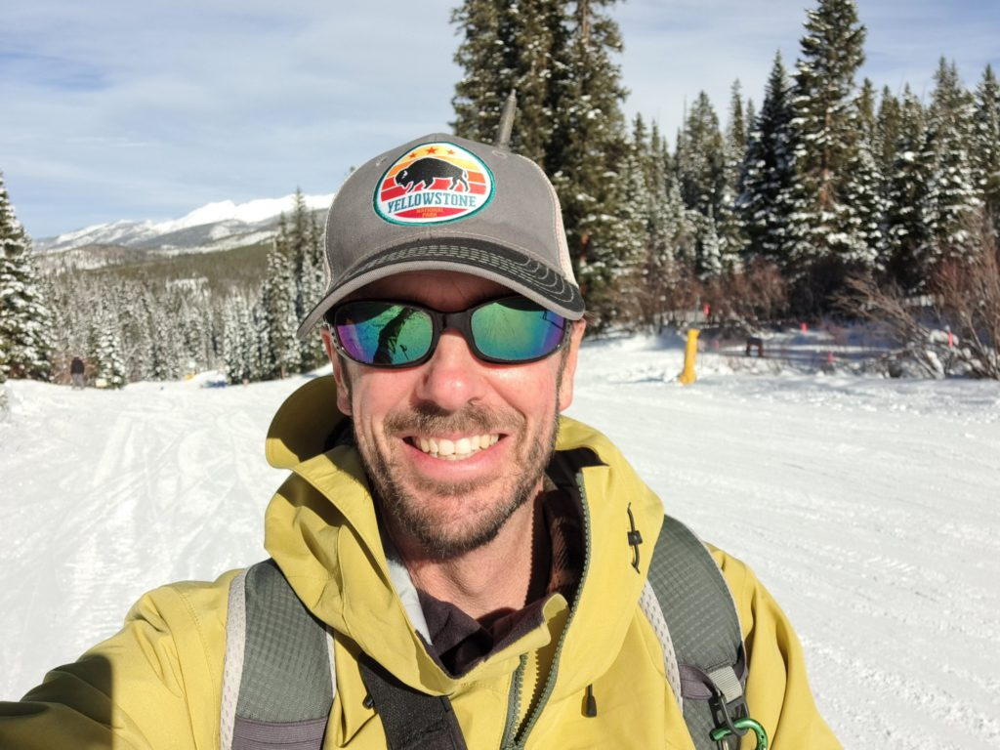
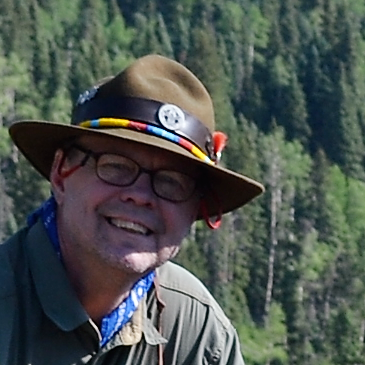
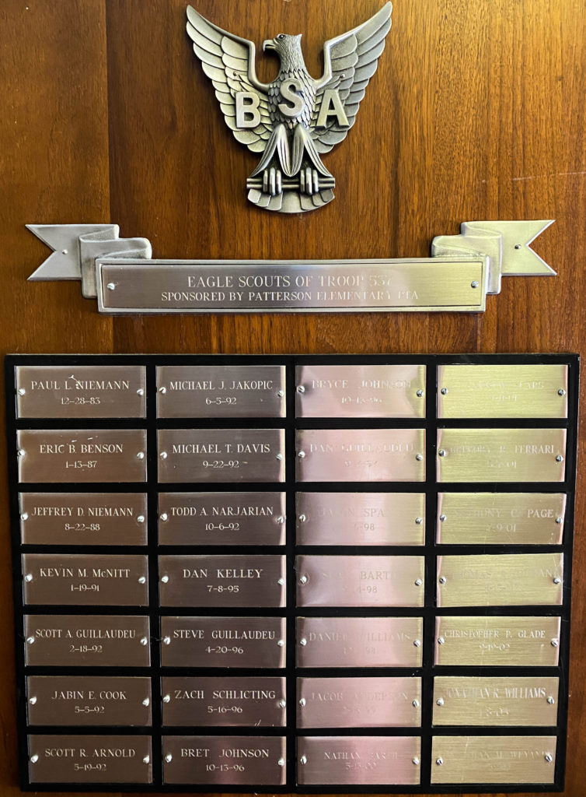
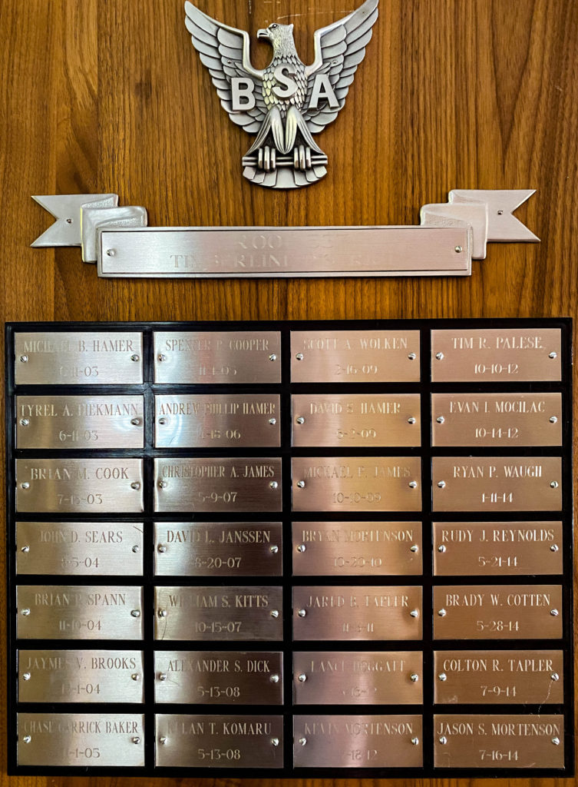
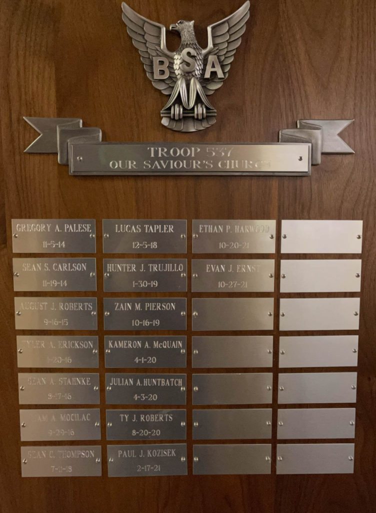

About Troop 537
Troop 537 was established in 1979 and we are proud to have produced over 70 Eagle Scouts. We are committed to making hands on learning fun for our Scouts! Troop 537 is part of the Alpine District in the Greater Colorado Council. If you are interested in visiting or learning more about Troop 537 or scouting, please contact us!
Where we meet
Charter Organization: Our Savior's Church
1975 S. Garrison St.,
Lakewood, CO 80227
We meet from 7:00-8:30PM on Wednesday nights all year long.
Monthly Outings
Each month the troop goes on an outing. Typically for these we leave on Friday evening and return on Sunday. These are usually camps, adventures such as canoeing, shooting sports, mountain biking, sailing or climbing.
Summer camps
Troop 537 attends a traditional BSA, week-long Summer camp each year. Usually, Summer camp is at our own council's Peaceful Valley, but in 2021 we will be attending camp at Melita Island, MT.
High Adventure
In addition to Summer camp and the adventures each month, Troop 537 plans a High Adventure trip each summer. The troop traditionally goes to one of the Boy Scouts of America High Adventure Bases such as the Philmont Scout Ranch in New Mexico or organizes a trip places like the Boundary Waters, Moab, Swamp Base, Sea Base, or Colorado ranges such as the San Juans.
Scoutmaster Fleming

Sam Fleming, a Front Range native, began his Scouting journey as a Cub Scout in 1978 and developed a profound passion for the outdoors during his time at Montana State University. With extensive experience in rafting, kayaking, skiing, mountain biking, and other outdoor pursuits, Sam is skilled at leading multi-day backcountry trips whether on the river or in the mountains. Before moving up to Boy Scouts with Ryan, Sam significantly expanded Pack 548 during his tenure as Cubmaster, growing it from 11 scouts to a thriving community of over 60. His contributions extend further as a committee member and coordinator for the Greater Colorado Council Roundtable. He's been recognized for his dedication, receiving awards like the Timberline District Volunteer of the Year in 2019 and the Alpine District Award of Merit in 2022.
As Scoutmaster, Sam prioritizes creating a safe space for scouts to explore and learn, emphasizing discovery rather than simply providing answers. He humorously admits, "Sometimes the Scouts surprise me and teach me a thing or two!" Sam finds immense joy in his roles as a loving husband to Susan and a father to Ryan and Jack. He treasures family adventures, whether on Idaho rivers, the slopes at Mary Jane, mountain bike race sidelines, or at choir, band and orchestra performances. Mr. Fleming welcomes you and your family to Troop 537 and invites you to attend a meeting to learn more about our Troop and Scouting.
Former Scoutmaster Mocilac

Troop 537 is honored to have long time Scouting veteran Charles Mocilac as part of our troop. Charles started scouting in 1973 when growing up in Rialto, California. Coming from a family of Eagle Scouts, he earned his eagle in 1976 and has one gold palm. Charles worked at Camp Emerson, Inland Empire Council's summer camp, for three years. Then, he received a commission as a second lieutenant in the US Army as a helicopter pilot. Charles retired from the Army after serving 21 years, and now has a graduate degree. During this his time in service, Charles participated in Scouting while stationed in Germany, Korea, Hawaii, and now, Colorado. Charles continues to work for the Department of Veterans Affairs Office of Community care in Denver. Here in Colorado, Charles has held the past positions as Cubmaster, Assistant Scoutmaster, Committee Chair, District Advancement Chairman and Venture Crew Advisor, and has been active in the Order of the Arrow. Both of Charles sons have earned their Eagle Scout award while in Troop 537, and he continues his passion for Scouting by leading and supporting many more adventures with this troop.
Supporting Cast
While Troop 537 is a Scout led troop, we are fortunate to many very active Scouters and parents helping this group of Scouts by passing along their skills and experiences and being there to encourage the Scouts along on their journey to Eagle and beyond.


